最も素晴らしいマウスランキング

あなたはどのマウスを使っていますか？最近はパソコン付属のマウスも良くなって来たので、そのまま使っている人も多いかと思います。
プログラマ、ブロガーにとって、キーボードとマウスはまさに 命。
今回は私の独断と偏見で、勝手に使いやすいマウスを選びます。
マウスの種類
マウスには大きく分けて６種類あります。
マウス
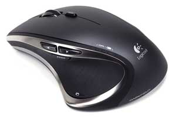
一般的に普及しているマウスです。 腕を平行に動かして使うのが特徴ですね。トラックパッド
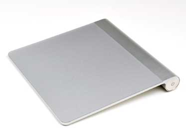
ノートパソコンなどに付属していますよね。 指で操作するのが特徴です。トラックボール
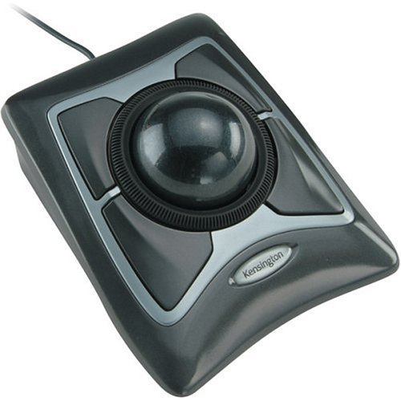
ボールを手で触って動かすマウスです。 見たことない人も多いかと思います。人によりますが、慣れるととても快適です。ゲーミングマウス
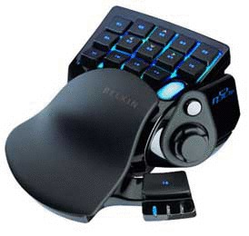
ゲームに特化した専用マウスです。
カスタムボタンが多く、非常に高性能なマウスが多いです。
プレゼンテーションマウス
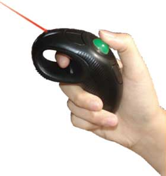
プレゼンテーション専用のマウスです。片手で持てたり、ワイヤレスのものが多いのが特徴です
その他
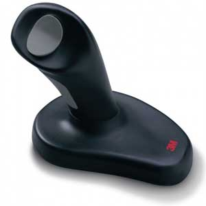
手を縦にして使ったりと様々です。このジャンルには、腱鞘炎対策のジョイスティック型が特に多い気がします。
今回のランキングは、以上の内で、
- マウス
- トラックパッド
- トラックボール
- ゲーミングマウス
以上４つのジャンル別に、独断で優れたマウスをランキング付けしました。
判断基準
ただ単にランキングをつけると偏見が多いので、以下の判断基準を設けています。
- 人気
- 性能
- 価格
- デザイン
- 耐久性
No.1: (一般的な)マウスランキング
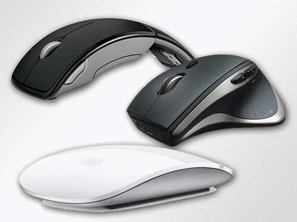
このジャンルは最もオーソドックスなので、様々な種類のマウスがあります。
価格帯なども考慮して順位を決定しました。
【３位】マイクロソフト『Arc Mouse (アーク マウス)』
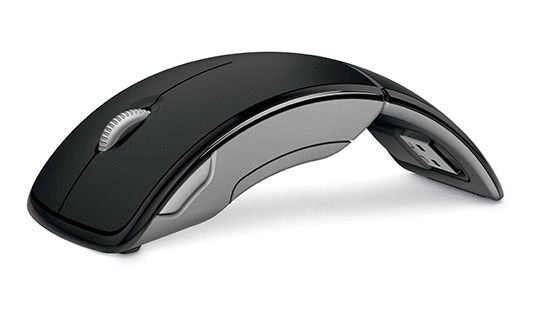
このマウスの特徴は、なんといってもその形です。
この形のおかげで重量が軽く、非常にスムーズに操作することができます。
意外にフィット感がよく、４つのカスタマイズ可能なボタン、ワイヤレスでありながらコストパフォーマンスが良いので、評判の良いマイクロソフト製の中でも最も使いやすいと思います。
相場の価格は2,000〜3,000円程と比較的安く、かなりオススメです。

売り上げランキング: 5,044
【２位】ロジクール『M185』
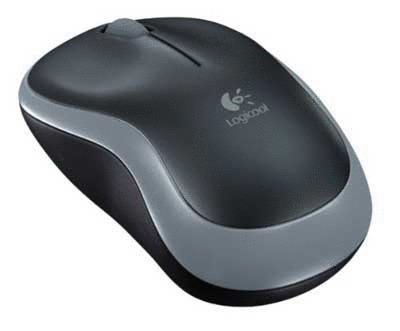
２位を選ぶのは相当難しかったのですが、コストパフォーマンスが素晴らしいM185を選びました。
トップ画像にあるように、当初はMagic Mouseも検討したのですが、Macでは標準のトラックパッドがあり、Windowsでは設定が面倒なので、このランキングとなりました。
このマウスはワイヤレスでは最安の800円台で、フォルムも手にフィットしてとても使いやすいです。
是非入門モデルとして購入してみてください。

売り上げランキング: 118
【１位】ロジクール『M705』
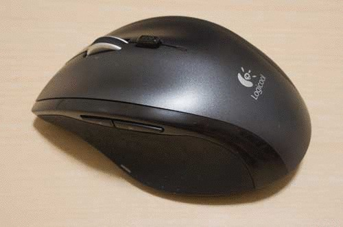
栄光の１位に輝いたのは、またもやロジクール社のミドルクラスモデルです。
この製品はワイヤレスには珍しく、電池が３年持つというとんでもない電池の持ちが売りです。
また、ホイールが自由運動するため、非常に高速にスクロールできます。気に入らない場合はスイッチで切り替えられますが、これに慣れるともう戻れません。
また、カスタムボタンが４つ付いているというのも魅力で、Win/Mac共にカスタマイズ出来ます。
相当使いやすいので、6,000円と少し高めですが、他ジャンルを入れても最もオススメです。
ちなみに
このシリーズには上級モデルのM905があり、どうしてそれを選ばなかったかといえば値段です。
M705は6000円前後、M905は1万円を超えます。
M705とM905の違いは主にボタンの数で、4個か10個かの違いです。

売り上げランキング: 2,990
No.2: トラックパッドランキング
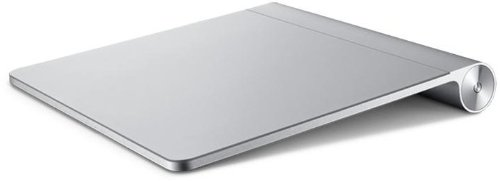
トラックパッドはパソコン付属のものが多く、種類も少ないので、１位のみ選定しました。
【１位】アップル『Apple Magic Trackpad』
この部門で選定されたのは、アップルの『Apple Magic Trackpad』です。
当然といえば当然ですね。これくらいしかメジャーなものがありませんし。
しかし、一度使えば手放せないという評判が多く、Macユーザでは購入者がかなり多いようです。
ちなみにWindowsで動かせないという人は、エレコムもタッチパッドを出しているようなので、そちらを検討してみてはどうでしょうか。

売り上げランキング: 2,948
No.3: トラックボールランキング
コアな層に根強い人気があるトラックボール。
親指式や大玉式などいくつも種類がありますが、今回は中立に価格.comの満足度をある程度参考にして決定しました。
【３位】ロジクール『M570』
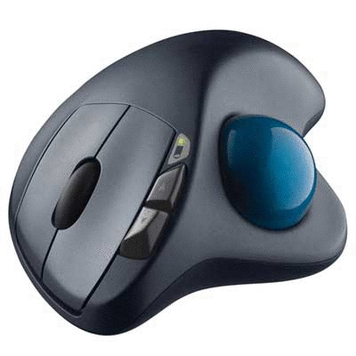
トラックパッド唯一のワイヤレスということが一番の決め手です。
トラックパッドの中では平均的な値段で、３つのカスタムボタンが付いているのもGoodです。
ただ親指式なのと、ボールが少し小さいので、３位にしました。

売り上げランキング: 626
【２位】ロジクール『TM-150r』
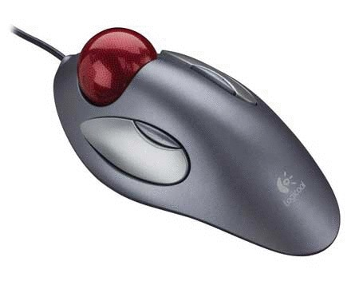
この商品はExpert Mouseに次いで価格.com満足度が高いため、２位にしました。
おそらく人気の秘密は、昔同じ形のモデルがあり、左手・右手好きな方で使えるということ、ボールの特殊加工と大きさにより疲れにくいが大きな利点です。
ちなみに、ケンジントン OrbitTrackball with Scroll Ringと迷ったのですが、最終的には3,000円前後という安さと、Amazonのレビューで決めました。

売り上げランキング: 1,611
【１位】ケンジントン『Expert Mouse』
ダントツの人気で、価格.com満足度No.1なのがこのExpert Mouseです。
言わずと知れた名器で、相当な満足感があると評判です。
フォルムが精錬されていて、ボールがとても大きく、４つのボタンも使いやすく、スクロールリング付きで、左手・右手好きな方で使えるというのが大ヒットの理由のようです。
ただその分だけ値段も相当高い。ですが、一度は使ってみたいものですね。

売り上げランキング: 82,494
No.4: ゲーミングマウス
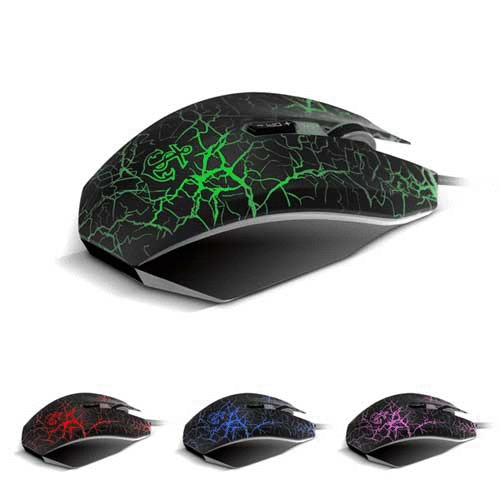
ゲーミングマウスは、FPSなどのゲームジャンルによって様々に形や機能が変わります。
そこで、今回も中立に、価格.comの満足度をある程度参考にして決定しました。
【３位】Razer『DeathAdder 2013』
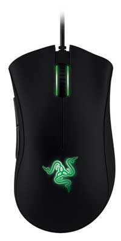
３位に選ばれたのは、エルゴノミクス・デザインのDeathAdderです。
このモデルの特徴は、6400dpi世界初光学式センサーという非常に高性能のセンサーを搭載し、50Gもの加速度でも認識することができます。
特に人間工学に基づいたデザインで、操作性が向上し、５つのカスタマイズボタン、クラウドと同期する専用ソフトが付属しています。
値段は少し高めですが、是非触ってみたいですね。

売り上げランキング: 239
【２位】 ロジクール『Optical Gaming Mouse G300』
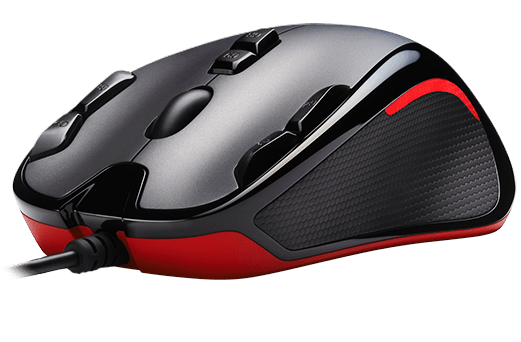
２位に選ばれたのはロジクールの正統派ゲーミングマウスです。
G300の特徴は、複雑なストロークをプログラムできる９つのボタン搭載で、左手・右手のどちらでも使えるシンメトリーデザイン、７色のイルミネーション搭載、プロファイルをオンボードメモリに保存、1/1000秒という高い精度を持つ、非常に高機能なモデルです。
その割に、3,000円前後とかなり安価で、導入しやすいゲーミングマウスです。

売り上げランキング: 140
【１位】ロジクール『Anywhere Mouse M905t』
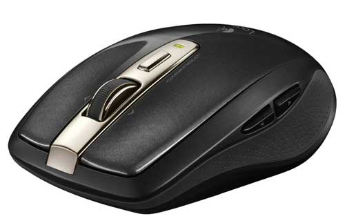
１位は、ロジクールの最高クラスのモデルです。実は、個人的には非常に意外でした。
ですが、どのブログも価格.com（ゲーミングマウス）も非常に評価が高く、とても好評なようです。
このマウスは最初の方に出てきたM705tの別系統の上位機種です。
高性能レーザーを搭載し、コンパクトで持ち運び可能、高速スクロール機能搭載という特徴があります。
通常のM905系との違いは高性能レーザーではないでしょうか。やはり精度が高いほうが良いのでしょうか…。

売り上げランキング: 3,508
まとめ
以上が、私の独断と偏見によるマウスランキングでした。
かなり賛否両論あると思いますが、異論があれば是非コメント欄に書き込んでもらえると嬉しいです。
こういう企画はなんだか新鮮で楽しいですね。またキーボード編をやってみたいです。(笑)
参考リンク
売り上げランキング: 82,494

| 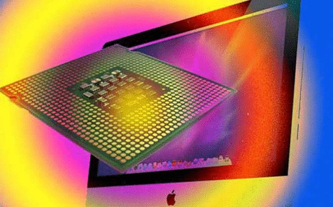 | 年代別に見るCPUの凄すぎる進化 |
 | 最も優れたキーボードランキング |
| 最も素晴らしいマウスランキング |
 | 世界の凄すぎるダンボールアート10選 |
 | 世界のインターネット事情 - Android vs iPhone |